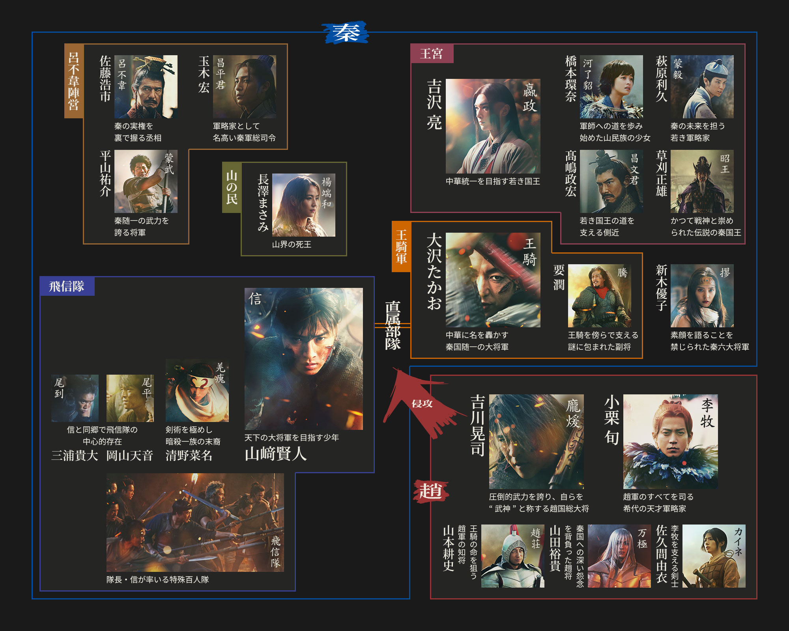

新着情報
ストーリー
秦の若き王・嬴政と戦災孤児の信。
二人が歩むは中華統一の道。
幾多の死地を越え、遂に迎えるは馬陽の決戦。
武神・龐煖、智将・李牧ら強敵が立ちはだかり、秦と趙の命運を賭した戦が幕を開ける。
キャラクター

山﨑賢人
吉沢 亮 橋本環奈 清野菜名
山田裕貴 岡山天音 三浦貴大 新木優子
吉川晃司
高嶋政宏 要 潤 加藤雅也 高橋光臣 平山祐介
山本耕史 草刈正雄 長澤まさみ
玉木 宏 佐藤浩市 小栗 旬
大沢たかお
原作：原 泰久「キングダム」（集英社「週刊ヤングジャンプ」連載）
監督：佐藤信介 脚本：黒岩 勉 原 泰久 音楽：やまだ豊
主題歌：ONE OK ROCK「Delusion:All」(Fueled By Ramen / Warner Music Japan)
製作総指揮：松平凡 要 潤一 長尾順康 阿部大輔 吉田和正 安本和生 佐藤義則 手塚治郎 安江 誠 金谷英剛 浜田一男 河村和範 神保 仁 エンタテインメントプロダクション協会 新村祐之
アソシエートプロデューサー：安藤 崇、北山直樹 製作：佐藤直樹 撮影監督：豊田康臣 編集：菊池純一 美術デザイン：千田由紀子
ラインプロデューサー：岩田靖典 撮影：大河原真 照明：小宮由紀夫（J.S.C.） 録音：小泉純一 音響効果：阿部一男 アクション監督：下村勇二
衣装デザイン：伊藤佐智子 視覚効果スーパーバイザー：渡辺潤 編集助手：鈴木健司 VFXスーパーバイザー：大澤 宏
©原泰久／集英社 ©2026 映画「キングダム 大将軍の帰還」製作委員会